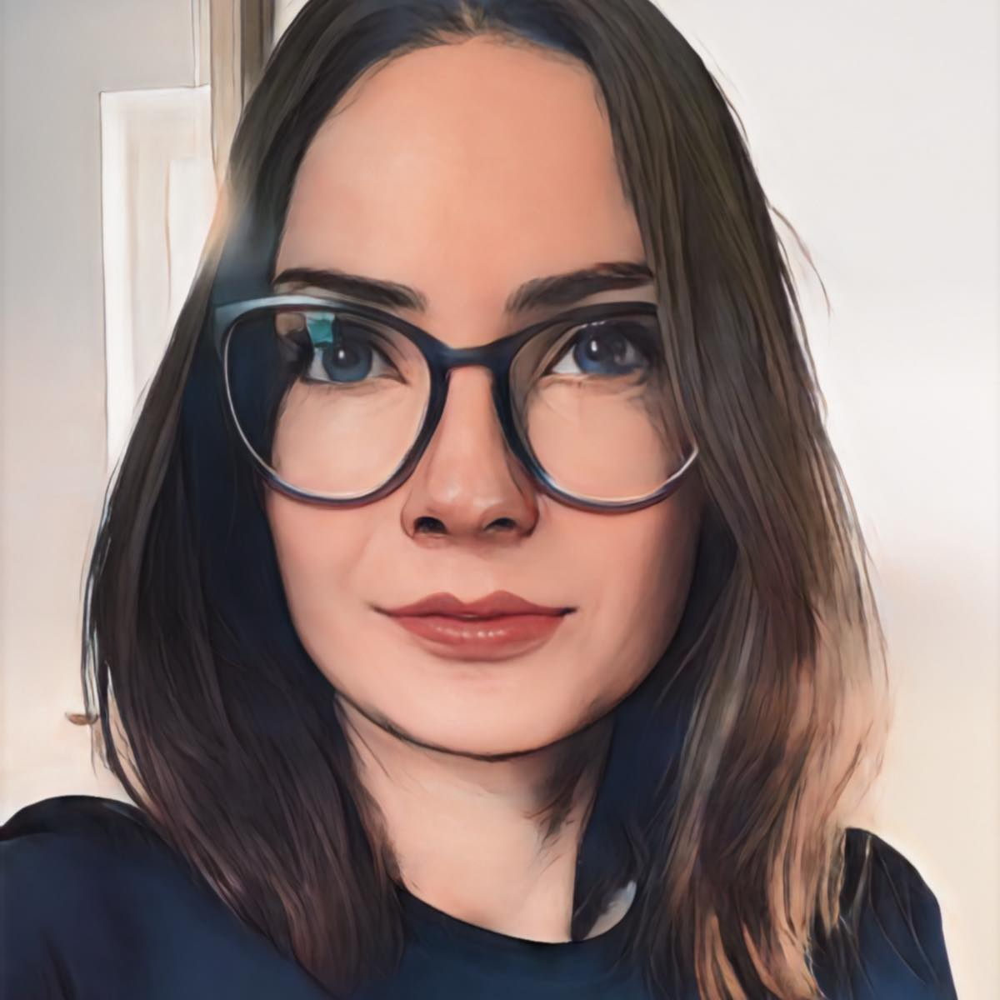

Ewelina Wesołowska
Summary
I am an ambitious, hard-working, proactive person and not afraid of
challenges. Currently, I'm realizing my ambitions as a software tester
based on the SCRUM / Agile methodology. I have an ISTQB FL certificate and
am currently expanding my skills towards automation.
Work experience
Skills
Certifications
- Certyfikat ISTQBCertyfikat ISTQB
Stowarzyszenie Jakości Systemów Informatycznych (Polish Testing Board)
Education
- APS Maria Grzegorzewska University APS Maria Grzegorzewska University
- Magister, Pedagogika pracy (2008 - 2010)
- APS Maria Grzegorzewska University
- Licencjat, Animacja Społeczno-Kulturowa (2005 - 2008)